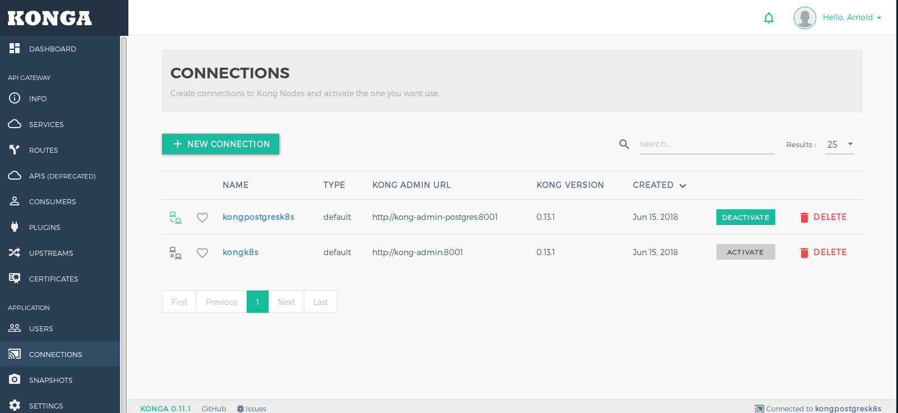
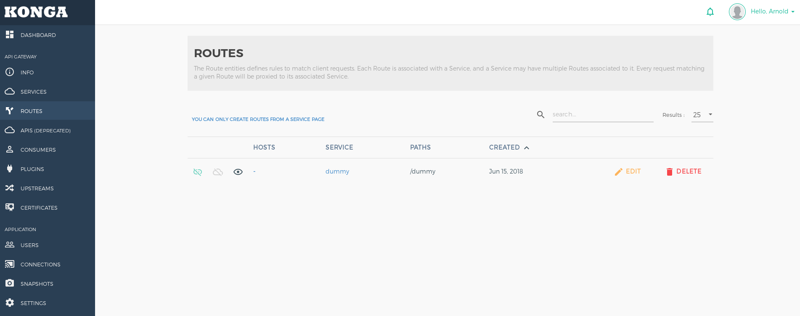
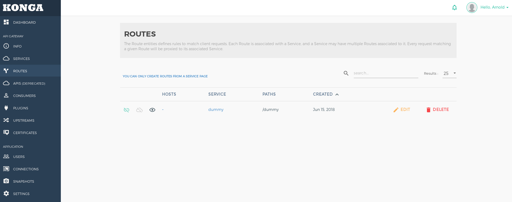

kong数据库
kong可以使用cassandra数据库或者postgres数据库作为存储，在定位kong的问题时，会经常需要查询数据库中相关的记录，下面分别介绍在kubernetes环境中查询kong数据库的方法。 实验环境： 在kubernetes环境中运行两个kong，一个采用cassandra数据库，一个采用postgres数据库。部署konga来管理2个kong，konga的数据库采用mongodb。所有数据库的底层存储采用k8s-nfs-provisioner模拟的nfs存储，一个测试服务http-svc。
[root@rhel74 ~]# kubectl get pod
NAME READY STATUS RESTARTS AGE
cassandra-0 1/1 Running 8 9d
cqlsh-84dfbc7f7c-8rtwb 1/1 Running 1 2h
http-svc-794dc89f5-4w7qc 1/1 Running 5 8d
kong-rc-5d9d5f8958-85cxw 1/1 Running 23 7d
kong-rc-5d9d5f8958-b9c9j 1/1 Running 23 7d
kong-rc-5d9d5f8958-wcfx4 1/1 Running 23 7d
kong-rc-postgres-c4bf5fd4d-4r8gb 1/1 Running 2 1h
kong-rc-postgres-c4bf5fd4d-kgzj8 1/1 Running 2 1h
kong-rc-postgres-c4bf5fd4d-t8nqw 1/1 Running 2 1h
konga-9c4d84c8b-stjk5 1/1 Running 5 7h
mongo-6f558f6c74-wmdb6 1/1 Running 2 7h
nfs-provisioner-77777dc768-fplsr 1/1 Running 8 9d
postgres-zjjxr 1/1 Running 1 1h
psql-599dc45695-ld8xb 1/1 Running 0 1h
[root@rhel74 ~]#
[root@rhel74 ~]# kubectl get svc
NAME TYPE CLUSTER-IP EXTERNAL-IP PORT(S) AGE
cassandra ClusterIP None <none> 9042/TCP 9d
http-svc ClusterIP 172.20.182.62 <none> 80/TCP 8d
kong-admin NodePort 172.20.121.84 <none> 8001:32423/TCP 7d
kong-admin-postgres LoadBalancer 172.20.35.116 <pending> 8001:32482/TCP 1h
kong-admin-ssl NodePort 172.20.155.24 <none> 8444:30299/TCP 7d
kong-admin-ssl-postgres LoadBalancer 172.20.79.246 <pending> 8444:31613/TCP 1h
kong-proxy NodePort 172.20.21.16 <none> 8000:31336/TCP 7d
kong-proxy-postgres LoadBalancer 172.20.203.9 <pending> 8000:32230/TCP 1h
kong-proxy-ssl NodePort 172.20.120.146 <none> 8443:31630/TCP 7d
kong-proxy-ssl-postgres LoadBalancer 172.20.65.87 <pending> 8443:32503/TCP 1h
konga NodePort 172.20.13.207 <none> 1337:31259/TCP 6h
kubernetes ClusterIP 172.20.0.1 <none> 443/TCP 11d
mongo ClusterIP 172.20.163.176 <none> 27017/TCP 7h
nfs-provisioner ClusterIP 172.20.238.224 <none> 2049/TCP,20048/TCP,111/TCP,111/UDP 9d
postgres ClusterIP 172.20.4.3 <none> 5432/TCP 1h
[root@rhel74 ~]#
[root@rhel74 ~]# kubectl get pvc
NAME STATUS VOLUME CAPACITY ACCESS MODES STORAGECLASS AGE
cassandra-data-cassandra-0 Bound pvc-6435f07a-695f-11e8-944a-5254005d04e6 1Gi RWO example-nfs 9d
mongo-data Bound pvc-218c579a-703f-11e8-892c-5254005d04e6 100Mi RWO default-nfs 7h
[root@rhel74 ~]#
[root@rhel74 ~]# kubectl get pv
NAME CAPACITY ACCESS MODES RECLAIM POLICY STATUS CLAIM STORAGECLASS REASON AGE
pvc-218c579a-703f-11e8-892c-5254005d04e6 100Mi RWO Delete Bound default/mongo-data default-nfs 7h
pvc-6435f07a-695f-11e8-944a-5254005d04e6 1Gi RWO Delete Bound default/cassandra-data-cassandra-0 example-nfs 9d
pvc-9752113e-6aee-11e8-8b84-5254005d04e6 1Gi RWO Delete Bound kong/datadir-postgres-0 default-nfs 7d
[root@rhel74 ~]#
[root@rhel74 ~]# kubectl get sc
NAME PROVISIONER AGE
default-nfs (default) example.com/nfs 8d
example-nfs example.com/nfs 9d
[root@rhel74 ~]#
konga管理两个kong，同一时间只有一个kong处于激活状态。

在konga上为kong创建services和routes，这些数据会在数据库存储中记录，用来测试查询数据库。
 

kong cassandra数据库
cassandra数据库采用calsh工具连接数据库进行查询。
编写在kubernetes中部署calsh工具的yaml文件cqlsh.yaml。
apiVersion: extensions/v1beta1
kind: Deployment
metadata:
name: cqlsh
spec:
replicas: 1
selector:
matchLabels:
app: cqlsh
template:
metadata:
labels:
app: cqlsh
spec:
containers:
- name: cqlsh
image: mikewright/cqlsh:latest
command: ["sleep", "infinity"]
imagePullPolicy: IfNotPresent
部署完成后，进入cqlsh的pod容器，执行连接cassandra数据库，并显示集群，键空间，表。
root@cqlsh-84dfbc7f7c-8rtwb:/# cqlsh cassandra 9042
Connection error: ('Unable to connect to any servers', {'172.16.120.199': ProtocolError("cql_version '3.3.1' is not supported by remote (w/ native protocol). Supported versions: [u'3.4.2']",)})
root@cqlsh-84dfbc7f7c-8rtwb:/# cqlsh cassandra 9042 --cqlversion="3.4.2"
Connected to K8Demo at cassandra:9042.
[cqlsh 5.0.1 | Cassandra 3.9 | CQL spec 3.4.2 | Native protocol v4]
Use HELP for help.
cqlsh> describe cluster;
Cluster: K8Demo
Partitioner: Murmur3Partitioner
cqlsh>
cqlsh> describe keyspaces;
system_schema system_auth system kong system_distributed system_traces
cqlsh>
cqlsh> use kong;
cqlsh:kong>
cqlsh:kong> describe tables;
schema_migrations oauth2_tokens services
ratelimiting_metrics upstreams plugins
jwt_secrets oauth2_authorization_codes cluster_events
consumers keyauth_credentials hmacauth_credentials
apis oauth2_credentials response_ratelimiting_metrics
ssl_certificates routes ssl_servers_names
basicauth_credentials acls targets
cqlsh:kong>
查询表的结构，数据。
cqlsh:kong>
cqlsh:kong> describe table services;
CREATE TABLE kong.services (
partition text,
id uuid,
connect_timeout int,
created_at timestamp,
host text,
name text,
path text,
port int,
protocol text,
read_timeout int,
retries int,
updated_at timestamp,
write_timeout int,
PRIMARY KEY (partition, id)
) WITH CLUSTERING ORDER BY (id ASC)
AND bloom_filter_fp_chance = 0.01
AND caching = {'keys': 'ALL', 'rows_per_partition': 'NONE'}
AND comment = ''
AND compaction = {'class': 'org.apache.cassandra.db.compaction.SizeTieredCompactionStrategy', 'max_threshold': '32', 'min_threshold': '4'}
AND compression = {'chunk_length_in_kb': '64', 'class': 'org.apache.cassandra.io.compress.LZ4Compressor'}
AND crc_check_chance = 1.0
AND dclocal_read_repair_chance = 0.1
AND default_time_to_live = 0
AND gc_grace_seconds = 864000
AND max_index_interval = 2048
AND memtable_flush_period_in_ms = 0
AND min_index_interval = 128
AND read_repair_chance = 0.0
AND speculative_retry = '99PERCENTILE';
CREATE INDEX services_name_idx ON kong.services (name);
cqlsh:kong>
cqlsh:kong> select * from services;
partition | id | connect_timeout | created_at | host | name | path | port | protocol | read_timeout | retries | updated_at | write_timeout
-----------+--------------------------------------+-----------------+---------------------------------+----------+-------+------+------+----------+--------------+---------+---------------------------------+---------------
services | 2fdffd72-8622-4351-b935-fe4f8d9d31bd | 60000 | 2018-06-15 02:11:56.000000+0000 | http-svc | dummy | null | 80 | http | 60000 | 5 | 2018-06-15 02:11:56.000000+0000 | 60000
(1 rows)
cqlsh:kong>
cqlsh:kong> expend on;
SyntaxException: <Error from server: code=2000 [Syntax error in CQL query] message="line 1:0 no viable alternative at input 'expend' ([expend]...)">
cqlsh:kong> expand on;
Now Expanded output is enabled
cqlsh:kong>
cqlsh:kong> select * from services;
@ Row 1
-----------------+--------------------------------------
partition | services
id | 2fdffd72-8622-4351-b935-fe4f8d9d31bd
connect_timeout | 60000
created_at | 2018-06-15 02:11:56.000000+0000
host | http-svc
name | dummy
path | null
port | 80
protocol | http
read_timeout | 60000
retries | 5
updated_at | 2018-06-15 02:11:56.000000+0000
write_timeout | 60000
(1 rows)
cqlsh:kong>
kong postgres数据库
postgres数据库采用psql工具连接数据库进行查询。
编写在kubernetes中部署psql工具的yaml文件psql.yaml。
apiVersion: extensions/v1beta1
kind: Deployment
metadata:
name: psql
spec:
replicas: 1
selector:
matchLabels:
app: psql
template:
metadata:
labels:
app: psql
spec:
containers:
- name: psql
image: governmentpaas/psql:latest
command: ["sleep", "100000000s"]
imagePullPolicy: IfNotPresent
部署完成后，进入psql的pod容器，执行连接postgres数据库（用户名:kong，密码:kong，数据库名:kong），并显示数据库，表。
[root@rhel74 ~]# kubectl exec -it psql-599dc45695-ld8xb /bin/sh
/ # psql -h postgres -p 5432 -U kong kong
Password for user kong:
psql (10.4, server 9.6.9)
Type "help" for help.
kong=# \l
List of databases
Name | Owner | Encoding | Collate | Ctype | Access privileges
-----------+----------+----------+------------+------------+-----------------------
kong | postgres | UTF8 | en_US.utf8 | en_US.utf8 |
postgres | postgres | UTF8 | en_US.utf8 | en_US.utf8 |
template0 | postgres | UTF8 | en_US.utf8 | en_US.utf8 | =c/postgres +
| | | | | postgres=CTc/postgres
template1 | postgres | UTF8 | en_US.utf8 | en_US.utf8 | =c/postgres +
| | | | | postgres=CTc/postgres
(4 rows)
kong=# \d
List of relations
Schema | Name | Type | Owner
--------+-------------------------------+-------+-------
public | acls | table | kong
public | apis | table | kong
public | basicauth_credentials | table | kong
public | cluster_events | table | kong
public | consumers | table | kong
public | hmacauth_credentials | table | kong
public | jwt_secrets | table | kong
public | keyauth_credentials | table | kong
public | oauth2_authorization_codes | table | kong
public | oauth2_credentials | table | kong
public | oauth2_tokens | table | kong
public | plugins | table | kong
public | ratelimiting_metrics | table | kong
public | response_ratelimiting_metrics | table | kong
public | routes | table | kong
public | schema_migrations | table | kong
public | services | table | kong
public | ssl_certificates | table | kong
public | ssl_servers_names | table | kong
public | targets | table | kong
public | ttls | table | kong
public | upstreams | table | kong
(22 rows)
kong=#
查询表的结构，数据。
kong=# select * from services;
id | created_at | updated_at | name | retries | protocol | host | port | path | connect_timeout | write_timeout | read_timeout
--------------------------------------+------------------------+------------------------+----------+---------+----------+----------+------+------+-----------------+---------------+--------------
84967f0d-8679-44c6-92f6-1732748e23a8 | 2018-06-15 07:17:11+00 | 2018-06-15 07:17:11+00 | http-svc | 5 | http | http-svc | 80 | | 60000 | 60000 | 60000
(1 row)
kong=#
kong=# \x on;
Expanded display is on.
kong=#
kong=# select * from services;
-[ RECORD 1 ]---+-------------------------------------
id | 84967f0d-8679-44c6-92f6-1732748e23a8
created_at | 2018-06-15 07:17:11+00
updated_at | 2018-06-15 07:17:11+00
name | http-svc
retries | 5
protocol | http
host | http-svc
port | 80
path |
connect_timeout | 60000
write_timeout | 60000
read_timeout | 60000
kong=#
kong=# \d services
Table "public.services"
Column | Type | Collation | Nullable | Default
-----------------+--------------------------+-----------+----------+---------
id | uuid | | not null |
created_at | timestamp with time zone | | |
updated_at | timestamp with time zone | | |
name | text | | |
retries | bigint | | |
protocol | text | | |
host | text | | |
port | bigint | | |
path | text | | |
connect_timeout | bigint | | |
write_timeout | bigint | | |
read_timeout | bigint | | |
Indexes:
"services_pkey" PRIMARY KEY, btree (id)
"services_name_key" UNIQUE CONSTRAINT, btree (name)
Referenced by:
TABLE "oauth2_authorization_codes" CONSTRAINT "oauth2_authorization_codes_service_id_fkey" FOREIGN KEY (service_id) REFERENCES services(id) ON DELETE CASCADE
TABLE "oauth2_tokens" CONSTRAINT "oauth2_tokens_service_id_fkey" FOREIGN KEY (service_id) REFERENCES services(id) ON DELETE CASCADE
TABLE "plugins" CONSTRAINT "plugins_service_id_fkey" FOREIGN KEY (service_id) REFERENCES services(id) ON DELETE CASCADE
TABLE "routes" CONSTRAINT "routes_service_id_fkey" FOREIGN KEY (service_id) REFERENCES services(id)
kong=#
konga mongodb数据库
mongdodb的pod容器中包含客户端mongo。 进入mongdodb的pod容器，执行连接mongodb数据库，并显示数据库，集合，文档。
[root@rhel74 ~]# kubectl exec -it mongo-6f558f6c74-wmdb6 /bin/bash
root@mongo-6f558f6c74-wmdb6:/#
root@mongo-6f558f6c74-wmdb6:/# mongo
MongoDB shell version v3.6.5
connecting to: mongodb://127.0.0.1:27017
MongoDB server version: 3.6.5
Welcome to the MongoDB shell.
For interactive help, type "help".
For more comprehensive documentation, see
http://docs.mongodb.org/
Questions? Try the support group
http://groups.google.com/group/mongodb-user
Server has startup warnings:
2018-06-15T07:39:37.703+0000 I CONTROL [initandlisten]
2018-06-15T07:39:37.703+0000 I CONTROL [initandlisten] ** WARNING: Access control is not enabled for the database.
2018-06-15T07:39:37.703+0000 I CONTROL [initandlisten] ** Read and write access to data and configuration is unrestricted.
2018-06-15T07:39:37.703+0000 I CONTROL [initandlisten]
2018-06-15T07:39:37.704+0000 I CONTROL [initandlisten]
2018-06-15T07:39:37.704+0000 I CONTROL [initandlisten] ** WARNING: /sys/kernel/mm/transparent_hugepage/enabled is 'always'.
2018-06-15T07:39:37.704+0000 I CONTROL [initandlisten] ** We suggest setting it to 'never'
2018-06-15T07:39:37.704+0000 I CONTROL [initandlisten]
2018-06-15T07:39:37.704+0000 I CONTROL [initandlisten] ** WARNING: /sys/kernel/mm/transparent_hugepage/defrag is 'always'.
2018-06-15T07:39:37.704+0000 I CONTROL [initandlisten] ** We suggest setting it to 'never'
2018-06-15T07:39:37.704+0000 I CONTROL [initandlisten]
>
> help
db.help() help on db methods
db.mycoll.help() help on collection methods
sh.help() sharding helpers
rs.help() replica set helpers
help admin administrative help
help connect connecting to a db help
help keys key shortcuts
help misc misc things to know
help mr mapreduce
show dbs show database names
show collections show collections in current database
show users show users in current database
show profile show most recent system.profile entries with time >= 1ms
show logs show the accessible logger names
show log [name] prints out the last segment of log in memory, 'global' is default
use <db_name> set current database
db.foo.find() list objects in collection foo
db.foo.find( { a : 1 } ) list objects in foo where a == 1
it result of the last line evaluated; use to further iterate
DBQuery.shellBatchSize = x set default number of items to display on shell
exit quit the mongo shell
> show dbs
admin 0.000GB
config 0.000GB
konga 0.000GB
local 0.000GB
> use konga
switched to db konga
> show collections
konga_api_health_checks
konga_email_transports
konga_kong_nodes
konga_kong_services
konga_kong_snapshot_schedules
konga_kong_snapshots
konga_netdata_connections
konga_passports
konga_settings
konga_users
>
查询集合的数据。
>
> db.konga_kong_services.find()
{ "_id" : ObjectId("5b23206c475fbb00057d0ce7"), "kong_node_id" : "5b231d66475fbb00057d0ce5", "service_id" : "2fdffd72-8622-4351-b935-fe4f8d9d31bd", "createdAt" : ISODate("2018-06-15T02:11:56.617Z"), "updatedAt" : ISODate("2018-06-15T02:11:56.617Z"), "createdUserId" : null, "updatedUserId" : null }
{ "_id" : ObjectId("5b2367f77520ac00056feccc"), "kong_node_id" : "5b2367aa7520ac00056feccb", "service_id" : "84967f0d-8679-44c6-92f6-1732748e23a8", "createdAt" : ISODate("2018-06-15T07:17:11.910Z"), "updatedAt" : ISODate("2018-06-15T07:17:11.910Z"), "createdUserId" : null, "updatedUserId" : null }
> db.konga_kong_services.find().pretty()
{
"_id" : ObjectId("5b23206c475fbb00057d0ce7"),
"kong_node_id" : "5b231d66475fbb00057d0ce5",
"service_id" : "2fdffd72-8622-4351-b935-fe4f8d9d31bd",
"createdAt" : ISODate("2018-06-15T02:11:56.617Z"),
"updatedAt" : ISODate("2018-06-15T02:11:56.617Z"),
"createdUserId" : null,
"updatedUserId" : null
}
{
"_id" : ObjectId("5b2367f77520ac00056feccc"),
"kong_node_id" : "5b2367aa7520ac00056feccb",
"service_id" : "84967f0d-8679-44c6-92f6-1732748e23a8",
"createdAt" : ISODate("2018-06-15T07:17:11.910Z"),
"updatedAt" : ISODate("2018-06-15T07:17:11.910Z"),
"createdUserId" : null,
"updatedUserId" : null
}
>